Early Career
Framework
January 2019
Acknowledgements
The Early Career Framework was developed in consultation with the following
members of an Expert Advisory Group and in collaboration with a wide range of
teachers, school leaders, academics and experts:
Roger Pope (Chair)
Education South West
Becky Francis
UCL Institute of Education
Marie Hamer
Ambition School Leadership and Institute for Teaching
Jon Hutchinson
Reach Academy Feltham
Stuart Lock
Advantage Schools
Reuben Moore
Teach First
Cat Scutt
Chartered College of Teaching
A wider advisory group made up of the following members provided further support
and challenge:
Lucy Blewett
Primary Advantage
Sam Freedman
Ark Education Partnerships Group
Stephen Munday
Teaching Schools Council, The Cam Academy Trust
Hannah Nemko
Dame Alice Owen’s School
Hamid Patel
Star Academies
Emma Rennison
Outwood Grange Academies Trust
Caroline Spalding
The Bemrose School
Andrew Warren
Teaching Schools Council1
David Weston
Teacher Development Trust
The content of the framework and its underpinning evidence has been independently
assessed and endorsed by the Education Endowment Foundation (EEF).
1 As of 7 January 2019, Andrew Warren started a new role as West Midlands Regional School
Commissioner, and is no longer a member of the advisory group.
2
Contents
Acknowledgements
2
Introduction
4
High Expectations (Standard 1 - Set high expectations)
8
How Pupils Learn (Standard 2 - Promote good progress)
10
Subject and Curriculum (Standard 3 - Demonstrate good subject and curriculum
knowledge)
12
Classroom Practice (Standard 4 - Plan and teach well structured lessons)
15
Adaptive Teaching (Standard 5 - Adapt teaching)
17
Assessment (Standard 6 - Make accurate and productive use of assessment)
19
Managing Behaviour (Standard 7 - Manage behaviour effectively)
22
Professional Behaviours (Standard 8 - Fulfil wider professional responsibilities)
24
References
26
3
Introduction
Transforming the support and development offer for teachers at the start of
their career
Teachers are the foundation of the education system - there are no great schools
without great teachers. Teachers deserve high quality support throughout their
careers, particularly in those first years of teaching when the learning curve is
steepest. Just as with other esteemed professions like medicine and law, teachers in
the first years of their career require high quality, structured support in order to begin
the journey towards becoming an expert. During induction, it is essential that early
career teachers are able to develop the knowledge, practices and working habits that
set them up for a fulfilling and successful career in teaching.
However, too often, new teachers have not enjoyed the support they need to thrive,
nor have they had adequate time to devote to their professional development. The
Early Career Framework (ECF) underpins an entitlement to a fully-funded, two-year
package of structured training and support for early career teachers linked to the
best available research evidence. The package of reforms will ensure new teachers
have dedicated time set aside to focus on their development.
Our vision is for the ECF to build on high-quality Initial Teacher Training (ITT) and
become the cornerstone of a successful career in teaching.
Development of the Early Career Framework
In collaboration with an Expert Advisory Group, the Department for Education
consulted extensively with the sector to design the ECF. This has included
invaluable input from teachers, school leaders, academics and experts.
The Education Endowment Foundation has independently reviewed the framework
to ensure it draws on the best available evidence and that this evidence has been
interpreted with fidelity.
The ECF sets out two types of content. Within each area, key evidence statements
(“Learn that…”) have been drawn from current high-quality evidence from the UK
and overseas. This evidence includes high-quality reviews and syntheses, including
meta-analyses and rigorous individual studies. In addition, the ECF provides
practical guidance on the skills that early career teachers should be supported to
develop. Practice statements (“Learn how to…”) draw on both the best available
educational research and on additional guidance from the Expert Advisory Group
and other sector representatives.
The ECF has been designed around how to support all pupils to succeed and seeks
to widen access for all. This includes those pupils identified within the four areas of
need set out in the Special Educational Needs and Disability (SEND) code of
practice, and children in need of help and protection as identified in the Children in
Need Review.
4
References for evidence underpinning each section are provided at the end of the
ECF. In each reference section, a small number of further reading items have been
recommended. These recommendations have been made on the basis of application
(for example, taking into account the extent to which the source includes clear
discussion of classroom practice) and accessibility (including whether the source is
in the public domain).
The ECF has been endorsed by a wide range of sector bodies including unions,
teacher training providers, university researchers, headteacher groups and special
educational needs and disability experts. The Chartered College of Teaching, the
recently established professional body for teachers, strongly supports the Early
Career Framework, and, as with the professional bodies of other esteemed
professions, will continue to support the entitlement for structured support for all
early career teachers.
The Early Career Framework builds on Initial Teacher Training and provides a
platform for future development
The content of the ECF builds on and complements ITT. The ECF underpins what all
early career teachers should be entitled to learn about and learn how to do based on
expert guidance and the best available research evidence. As is the case for other
professions, areas covered in initial training will be covered in greater depth as part
of induction as teachers continue on their journey to becoming experts.
The ECF has been designed to support early career teacher development in 5 core
areas - behaviour management, pedagogy, curriculum, assessment and
professional behaviours. In order to ensure congruence with the 8 Teachers’
Standards, the content of the framework is presented in 8 sections. In developing the
framework, behaviour management was thought to be encompassed by High
Expectations and Managing Behaviour (S1 and S7); pedagogy was thought to be
encompassed by How Pupils Learn, Classroom Practice and Adaptive Teaching (S2,
S4, S5); and curriculum, assessment and professional behaviours were thought to
be encompassed by S3, S6 and S8 respectively.
While the ECF is presented around the Teachers’ Standards for clarity, the ECF is
not, and should not be used, as an assessment framework. Early career
teachers will not be expected to collect evidence against the ECF, and they will
continue to be assessed against the Teachers’ Standards only. The ECF will
underpin an entitlement to training and support for early career teachers and should
not be seen as an additional assessment tool.
Part Two of the Teachers’ Standards defines the behaviour and attitudes which set
the required standard for conduct throughout a teacher’s career. These standards
must always be met and stand alongside the ECF so are not explicitly referenced
within the framework.
5
Implementing the Framework
We recognise that in order for the ECF to have a positive impact on early career
teachers, it must be firmly and exclusively about an entitlement to additional support
and training. We are committed to meeting the significant investment needed to
ensure the ECF delivers on its promise.
Therefore, for national roll-out, we have committed to:
• Funding and guaranteeing 5% off-timetable in the second year of teaching for
all early career teachers; early career teachers will continue to have a 10%
timetable reduction in their first year of induction.
• Creating high quality, freely available ECF curricula and training materials;
• Establishing full, high quality ECF training programmes;
• Funding time for mentors to support early career teachers; and
• Fully funded mentor training.
By the time the new system is fully in place, we anticipate investing at least an
additional £130 million every year to support ECF delivery in full.
Further detail on the role of the ECF in the delivery of a strengthened induction will
be published as part of the updated statutory guidance in due course. Once the new
statutory guidance takes effect and the ECF is fully rolled out, the ECF will underpin
an entitlement to a two year programme of structured training and development.
Schools will not be expected to use the framework before this statutory guidance is
in place.
Early roll-out
We are committed to continuing our work with the sector on the implementation of
the ECF. We want to ensure that schools have the support they need to deliver this
training entitlement for early career teachers. Our plans for an early roll-out in the
North East, Bradford, Doncaster and Greater Manchester from September 2020 as
part of the £42 million Teacher Development Premium will give us the opportunity to
understand how best to support teachers and schools with implementation of the
framework, including continuing to monitor workload considerations. This early roll-
out phase will help us to build our evidence on how to roll out the framework
nationally in September 2021 and ensure it meets the needs of early career teachers
and enables them to enjoy a successful start in the profession.
Updating the Early Career Framework
The ECF will be kept under review as the evidence base evolves. As in any
profession, the evidence base is not static and research insights develop and
progress.
6
Early Career Framework
The content of the framework and its underpinning evidence has been independently assessed and endorsed by the
Education Endowment Foundation (EEF).
7
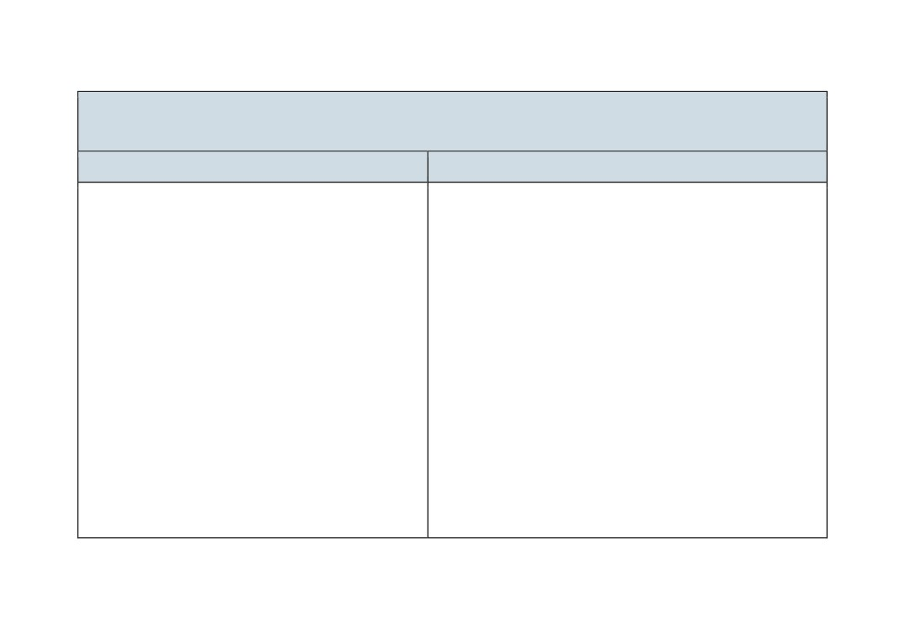
High Expectations (Standard 1 - Set high expectations)
Learn that…
Learn how to…
1.
Teachers have the ability to affect and improve the
Communicate a belief in the academic potential of all pupils,
wellbeing, motivation and behaviour of their pupils.
by:
• Using intentional and consistent language that promotes
2.
Teachers are key role models, who can influence the
challenge and aspiration.
attitudes, values and behaviours of their pupils.
• Setting tasks that stretch pupils, but which are achievable,
within a challenging curriculum.
3.
Teacher expectations can affect pupil outcomes; setting
goals that challenge and stretch pupils is essential.
• Creating a positive environment where making mistakes and
learning from them and the need for effort and perseverance
4.
Setting clear expectations can help communicate
are part of the daily routine.
shared values that improve classroom and school
• Seeking opportunities to engage parents and carers in the
culture.
education of their children (e.g. proactively highlighting
successes).
5.
A culture of mutual trust and respect supports effective
relationships.
Demonstrate consistently high behavioural expectations, by:
6.
High-quality teaching has a long-term positive effect on
• Creating a culture of respect and trust in the classroom that
pupils’ life chances, particularly for children from
supports all pupils to succeed (e.g. by modelling the types of
disadvantaged backgrounds.
courteous behaviour expected of pupils).
• Teaching and rigorously maintaining clear behavioural
expectations (e.g. for contributions, volume level and
concentration).
8
• Applying rules, sanctions and rewards in line with school
policy, escalating behaviour incidents as appropriate.
• Acknowledging and praising pupil effort and emphasising
progress being made.
Notes
Learn that… statements are informed by the best available educational research; references and further reading are provided
below.
Learn how to… statements are drawn from the wider evidence base including both academic research and additional guidance
from expert practitioners.
9
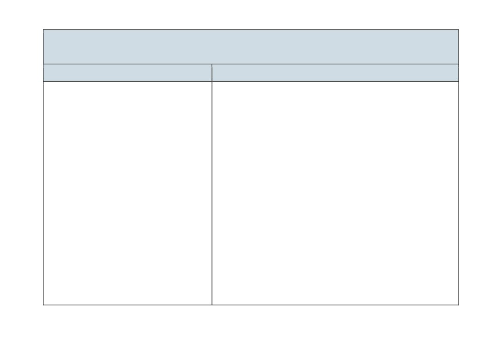
How Pupils Learn (Standard 2 - Promote good progress)
Learn that…
Learn how to…
1.
Learning involves a lasting change in pupils’
Avoid overloading working memory, by:
capabilities or understanding.
• Taking into account pupils’ prior knowledge when planning how
much new information to introduce.
2.
Prior knowledge plays an important role in how
• Breaking complex material into smaller steps (e.g. using partially
pupils learn; committing some key facts to their
completed examples to focus pupils on the specific steps).
long-term memory is likely to help pupils learn
more complex ideas.
• Reducing distractions that take attention away from what is being
taught (e.g. keeping the complexity of a task to a minimum, so that
3.
An important factor in learning is memory,
attention is focused on the content).
which can be thought of as comprising two
elements: working memory and long-term
Build on pupils’ prior knowledge, by:
memory.
• Identifying possible misconceptions and planning how to prevent
4.
Working memory is where information that is
these forming.
being actively processed is held, but its
• Linking what pupils already know to what is being taught (e.g.
capacity is limited and can be overloaded.
explaining how new content builds on what is already known).
5.
Long-term memory can be considered as a
• Sequencing lessons so that pupils secure foundational knowledge
store of knowledge that changes as pupils
before encountering more complex content.
learn by integrating new ideas with existing
• Encouraging pupils to share emerging understanding and points of
knowledge.
confusion so that misconceptions can be addressed.
6.
Where prior knowledge is weak, pupils are
more likely to develop misconceptions,
Increase likelihood of material being retained, by:
particularly if new ideas are introduced too
• Balancing exposition, repetition, practice and retrieval of critical
quickly.
knowledge and skills.
10
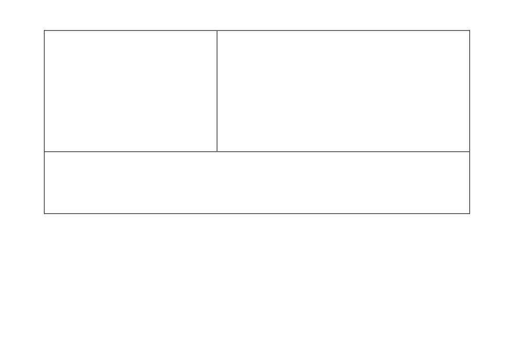
7.
Regular purposeful practice of what has
• Planning regular review and practice of key ideas and concepts over
previously been taught can help consolidate
time.
material and help pupils remember what they
• Designing practice, generation and retrieval tasks that provide just
have learned.
enough support so that pupils experience a high success rate when
attempting challenging work.
8.
Requiring pupils to retrieve information from
memory, and spacing practice so that pupils
• Increasing challenge with practice and retrieval as knowledge
revisit ideas after a gap are also likely to
becomes more secure (e.g. by removing scaffolding, lengthening
strengthen recall.
spacing or introducing interacting elements).
9.
Worked examples that take pupils through
each step of a new process are also likely to
support pupils to learn.
Notes
Learn that… statements are informed by the best available educational research; references and further reading are provided
below.
Learn how to… statements are drawn from a wider evidence base including both academic research and additional guidance
from expert practitioners.
11
Subject and Curriculum (Standard 3 - Demonstrate good subject and curriculum
knowledge)
Learn that…
Learn how to…
1.
A school’s curriculum enables it to set out its
Deliver a carefully sequenced and coherent curriculum, by:
vision for the knowledge, skills and values that
• Identifying essential concepts, knowledge, skills and principles of the
its pupils will learn, encompassing the national
subject and providing opportunity for all pupils to learn and master
curriculum within a coherent wider vision for
these critical components.
successful learning.
• Ensuring pupils’ thinking is focused on key ideas within the subject.
2.
Secure subject knowledge helps teachers to
• Working with experienced colleagues to accumulate and refine a
motivate pupils and teach effectively.
collection of powerful analogies, illustrations, examples, explanations
and demonstrations.
3.
Ensuring pupils master foundational concepts
and knowledge before moving on is likely to
• Using resources and materials aligned with the school curriculum (e.g.
build pupils’ confidence and help them succeed.
textbooks or shared resources designed by experienced colleagues
that carefully sequence content).
4.
Anticipating common misconceptions within
• Being aware of common misconceptions and discussing with
particular subjects is also an important aspect of
experienced colleagues how to help pupils master important concepts.
curricular knowledge; working closely with
colleagues to develop an understanding of likely
misconceptions is valuable.
Support pupils to build increasingly complex mental models, by:
• Discussing curriculum design with experienced colleagues and
5.
Explicitly teaching pupils the knowledge and
balancing exposition, repetition, practice of critical skills and
skills they need to succeed within particular
knowledge.
subject areas is beneficial.
• Revisiting the big ideas of the subject over time and teaching key
concepts through a range of examples.
6.
In order for pupils to think critically, they must
have a secure understanding of knowledge
• Drawing explicit links between new content and the core concepts and
principles in the subject.
12
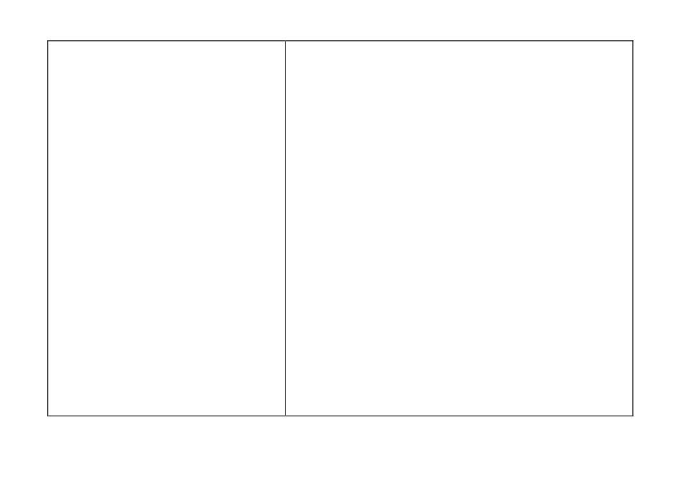
within the subject area they are being asked to
Develop fluency, by:
think critically about.
• Providing tasks that support pupils to learn key ideas securely (e.g.
quizzing pupils so they develop fluency with times tables).
7.
In all subject areas, pupils learn new ideas by
• Using retrieval and spaced practice to build automatic recall of key
linking those ideas to existing knowledge,
knowledge.
organising this knowledge into increasingly
complex mental models (or “schemata”);
carefully sequencing teaching to facilitate this
Help pupils apply knowledge and skills to other contexts, by:
process is important.
• Ensuring pupils have relevant domain-specific knowledge, especially
when being asked to think critically within a subject.
8.
Pupils are likely to struggle to transfer what has
• Interleaving concrete and abstract examples, slowly withdrawing
been learnt in one discipline to a new or
concrete examples and drawing attention to the underlying structure of
unfamiliar context.
problems.
9.
To access the curriculum, early literacy provides
fundamental knowledge; reading comprises two
Develop pupils’ literacy, by:
elements: word reading and language
•
Demonstrating a clear understanding of systematic synthetic phonics,
comprehension; systematic synthetic phonics is
particularly if teaching early reading and spelling.
the most effective approach for teaching pupils
to decode.
•
Supporting younger pupils to become fluent readers and to write
fluently and legibly.
10.
Every teacher can improve pupils’ literacy,
•
Teaching unfamiliar vocabulary explicitly and planning for pupils to be
including by explicitly teaching reading, writing
repeatedly exposed to high-utility and high-frequency vocabulary in
and oral language skills specific to individual
what is taught.
disciplines.
•
Modelling reading comprehension by asking questions, making
predictions, and summarising when reading.
•
Promoting reading for pleasure (e.g. by using a range of whole class
reading approaches and regularly reading high-quality texts to
children).
•
Modelling and requiring high-quality oral language, recognising that
spoken language underpins the development of reading and writing
13
(e.g. requiring pupils to respond to questions in full sentences, making
use of relevant technical vocabulary).
• Teaching different forms of writing by modelling planning, drafting and
editing.
Notes
Learn that… statements are informed by the best available educational research; references and further reading are provided below.
Learn how to… statements are drawn from a wider evidence base including both academic research and additional guidance from
expert practitioners.
14
Classroom Practice (Standard 4 - Plan and teach well structured lessons)
Learn that…
Learn how to…
1.
Effective teaching can transform pupils’
Plan effective lessons, by:
knowledge, capabilities and beliefs about
• Using modelling, explanations and scaffolds, acknowledging that
learning.
novices need more structure early in a domain.
• Enabling critical thinking and problem solving by first teaching the
2.
Effective teachers introduce new material in
necessary foundational content knowledge.
steps, explicitly linking new ideas to what has
been previously studied and learned.
• Removing scaffolding only when pupils are achieving a high degree of
success in applying previously taught material.
3.
Modelling helps pupils understand new
• Providing sufficient opportunity for pupils to consolidate and practise
processes and ideas; good models make
applying new knowledge and skills.
abstract ideas concrete and accessible.
• Breaking tasks down into constituent components when first setting
4.
Guides, scaffolds and worked examples can
up independent practice (e.g. using tasks that scaffold pupils through
help pupils apply new ideas, but should be
meta-cognitive and procedural processes).
gradually removed as pupil expertise increases.
5.
Explicitly teaching pupils metacognitive
Make good use of expositions, by:
strategies linked to subject knowledge,
• Starting expositions at the point of current pupil understanding.
including how to plan, monitor and evaluate,
• Combining a verbal explanation with a relevant graphical
supports independence and academic success.
representation of the same concept or process, where appropriate.
6.
Questioning is an essential tool for teachers;
• Using concrete representation of abstract ideas (e.g. making use of
questions can be used for many purposes,
analogies, metaphors, examples and non-examples).
including to check pupils’ prior knowledge,
assess understanding and break down
Model effectively, by:
problems.
• Narrating thought processes when modelling to make explicit how
experts think (e.g. asking questions aloud that pupils should consider
15
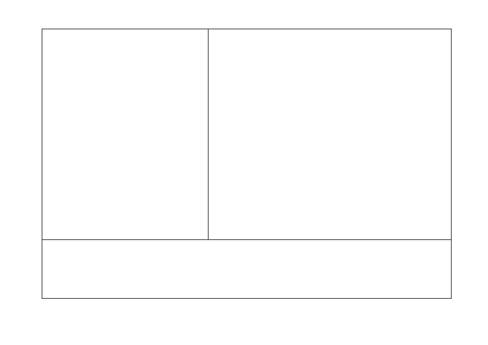
7.
High-quality classroom talk can support pupils
when working independently and drawing pupils’ attention to links with
to articulate key ideas, consolidate
prior knowledge).
understanding and extend their vocabulary.
• Making the steps in a process memorable and ensuring pupils can
recall them (e.g. naming them, developing mnemonics, or linking to
8.
Practice is an integral part of effective teaching;
memorable stories).
ensuring pupils have repeated opportunities to
practise, with appropriate guidance and
• Exposing potential pitfalls and explaining how to avoid them.
support, increases success.
Stimulate pupil thinking and check for understanding, by:
9.
Paired and group activities can increase pupil
• Planning activities around what you want pupils to think hard about.
success, but to work together effectively pupils
need guidance, support and practice.
• Including a range of types of questions in class discussions to extend
and challenge pupils (e.g. by modelling new vocabulary or asking
10.
How pupils are grouped is also important; care
pupils to justify answers).
should be taken to monitor the impact of
groupings on pupil attainment, behaviour and
• Providing appropriate wait time between question and response
motivation.
where more developed responses are required.
• Considering the factors that will support effective collaborative or
11.
Homework can improve pupil outcomes,
paired work (e.g. familiarity with routines, whether pupils have the
particularly for older pupils, but it is likely that
necessary prior knowledge and how pupils are grouped).
the quality of homework and its relevance to
main class teaching is more important than the
• Providing scaffolds for pupil talk to increase the focus and rigour of
amount set.
dialogue.
Notes
Learn that… statements are informed by the best available educational research; references and further reading are provided
below.
Learn how to… statements are drawn from a wider evidence base including both academic research and additional guidance from
expert practitioners.
16
Adaptive Teaching (Standard 5 - Adapt teaching)
Learn that…
Learn how to…
1.
Pupils are likely to learn at different rates and
Develop an understanding of different pupil needs, by:
to require different levels and types of support
• Identifying pupils who need new content further broken down.
from teachers to succeed.
• Making use of formative assessment.
2.
Seeking to understand pupils’ differences,
• Working closely with the Special Educational Needs Co-ordinator
including their different levels of prior
(SENCO) and special education professionals and the Designated
knowledge and potential barriers to learning, is
Safeguarding Lead.
an essential part of teaching.
• Using the SEND Code of Practice, which provides additional
3.
Adapting teaching in a responsive way,
guidance on supporting pupils with SEND effectively.
including by providing targeted support to
pupils who are struggling, is likely to increase
Provide opportunity for all pupils to experience success, by:
pupil success.
• Adapting lessons, whilst maintaining high expectations for all, so that
all pupils have the opportunity to meet expectations.
4.
Adaptive teaching is less likely to be valuable if
it causes the teacher to artificially create
• Balancing input of new content so that pupils master important
distinct tasks for different groups of pupils or to
concepts.
set lower expectations for particular pupils.
• Making effective use of teaching assistants.
5.
Flexibly grouping pupils within a class to
provide more tailored support can be effective,
Meet individual needs without creating unnecessary workload, by:
but care should be taken to monitor its impact
• Making use of well-designed resources (e.g. textbooks).
on engagement and motivation, particularly for
• Planning to connect new content with pupils' existing knowledge or
low attaining pupils.
providing additional pre-teaching if pupils lack critical knowledge.
6.
There is a common misconception that pupils
• Building in additional practice or removing unnecessary expositions.
have distinct and identifiable learning styles.
• Reframing questions to provide greater scaffolding or greater stretch.
This is not supported by evidence and
17
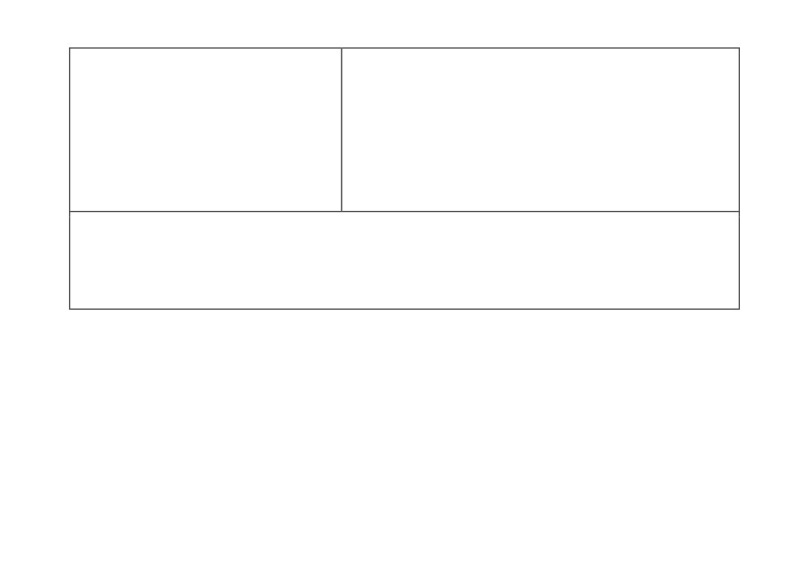
attempting to tailor lessons to learning styles is
• Considering carefully whether intervening within lessons with
unlikely to be beneficial.
individuals and small groups would be more efficient and effective
than planning different lessons for different groups of pupils.
7.
Pupils with special educational needs or
disabilities are likely to require additional or
Group pupils effectively, by:
adapted support; working closely with
• Applying high expectations to all groups, and ensuring all pupils have
colleagues, families and pupils to understand
access to a rich curriculum.
barriers and identify effective strategies is
• Changing groups regularly, avoiding the perception that groups are
essential.
fixed.
• Ensuring that any groups based on attainment are subject specific.
Notes
Learn that… statements are informed by the best available educational research; references and further reading are provided
below.
Learn how to… statements are drawn from a wider evidence base including both academic research and additional guidance
from expert practitioners.
18
Assessment (Standard 6 - Make accurate and productive use of assessment)
Learn that…
Learn how to…
1.
Effective assessment is critical to teaching
Avoid common assessment pitfalls, by:
because it provides teachers with information
• Planning formative assessment tasks linked to lesson objectives and
about pupils’ understanding and needs.
thinking ahead about what would indicate understanding (e.g. by
using hinge questions to pinpoint knowledge gaps).
2.
Good assessment helps teachers avoid being
• Drawing conclusions about what pupils have learned by looking at
over-influenced by potentially misleading
patterns of performance over a number of assessments (e.g.
factors, such as how busy pupils appear.
appreciating that assessments draw inferences about learning from
performance).
3.
Before using any assessment, teachers should
• Choosing, where possible, externally validated materials, used in
be clear about the decision it will be used to
controlled conditions when required to make summative
support and be able to justify its use.
assessments.
4.
To be of value, teachers use information from
assessments to inform the decisions they make;
Check prior knowledge and understanding during lessons, by:
in turn, pupils must be able to act on feedback
• Using assessments to check for prior knowledge and pre-existing
for it to have an effect.
misconceptions.
• Structuring tasks and questions to enable the identification of
5.
High-quality feedback can be written or verbal; it
knowledge gaps and misconceptions (e.g. by using common
is likely to be accurate and clear, encourage
misconceptions within multiple-choice questions).
further effort, and provide specific guidance on
• Prompting pupils to elaborate when responding to questioning to
how to improve.
check that a correct answer stems from secure understanding.
6.
Over time, feedback should support pupils to
• Monitoring pupil work during lessons, including checking for
monitor and regulate their own learning.
misconceptions.
7. Working with colleagues to identify efficient
approaches to assessment is important;
19
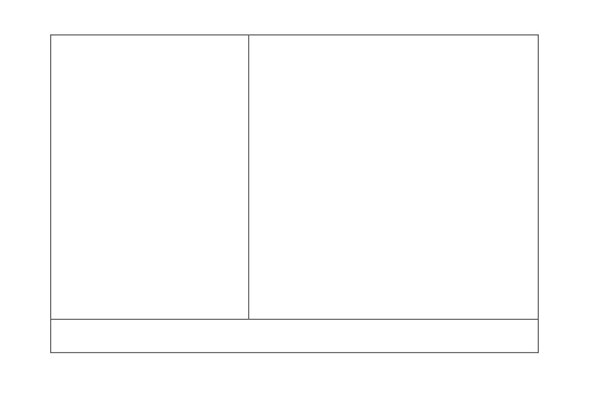
assessment can become onerous and have a
Provide high-quality feedback, by:
disproportionate impact on workload.
• Focusing on specific actions for pupils and providing time for pupils
to respond to feedback.
• Appreciating that pupils’ responses to feedback can vary depending
on a range of social factors (e.g. the message the feedback contains
or the age of the child).
• Scaffolding self-assessment by sharing model work with pupils,
highlighting key details.
• Thinking carefully about how to ensure feedback is specific and
helpful when using peer- or self-assessment.
Make marking manageable and effective, by:
• Recording data only when it is useful for improving pupil outcomes.
• Working with colleagues to identify efficient approaches to marking
and alternative approaches to providing feedback (e.g. using whole
class feedback or well supported peer- and self-assessment).
• Using verbal feedback during lessons in place of written feedback
after lessons where possible.
• Understanding that written marking is only one form of feedback.
• Reducing the opportunity cost of marking (e.g. by using
abbreviations and codes in written feedback).
• Prioritising the highlighting of errors related to misunderstandings,
rather than careless mistakes when marking.
Notes
20
Learn that… statements are informed by the best available educational research; references and further reading are provided
below.
Learn how to… statements are drawn from a wider evidence base including both academic research and additional guidance
from expert practitioners.
21
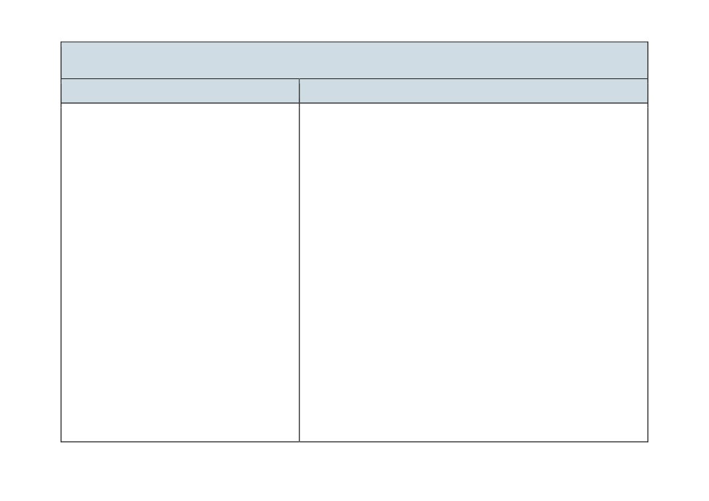
Managing Behaviour (Standard 7 - Manage behaviour effectively)
Learn that…
Learn how to…
1. Establishing and reinforcing routines,
Develop a positive, predictable and safe environment for pupils, by:
including through positive reinforcement, can
•
Establishing a supportive and inclusive environment with a
help create an effective learning
predictable system of reward and sanction in the classroom.
environment.
•
Working alongside colleagues as part of a wider system of behaviour
management (e.g. recognising responsibilities and understanding the
2. A predictable and secure environment benefits
right to assistance and training from senior colleagues).
all pupils, but is particularly valuable for pupils
with special educational needs.
•
Giving manageable, specific and sequential instructions.
•
Checking pupils’ understanding of instructions before a task begins.
3.
The ability to self-regulate one’s emotions
affects pupils’ ability to learn, success in school
•
Using consistent language and non-verbal signals for common
and future lives.
classroom directions.
•
Using early and least-intrusive interventions as an initial response to
4.
Teachers can influence pupils’ resilience and
low level disruption.
beliefs about their ability to succeed, by
ensuring all pupils have the opportunity to
•
Responding quickly to any behaviour or bullying that threatens
experience meaningful success.
emotional safety.
5.
Building effective relationships is easier when
Establish effective routines and expectations, by:
pupils believe that their feelings will be
considered and understood.
• Creating and explicitly teaching routines in line with the school ethos
that maximise time for learning (e.g. setting and reinforcing
6.
Pupils are motivated by intrinsic factors (related
expectations about key transition points).
to their identity and values) and extrinsic factors
• Practising routines at the beginning of the school year.
(related to reward).
• Reinforcing routines (e.g. by articulating the link between time on
task and success).
22
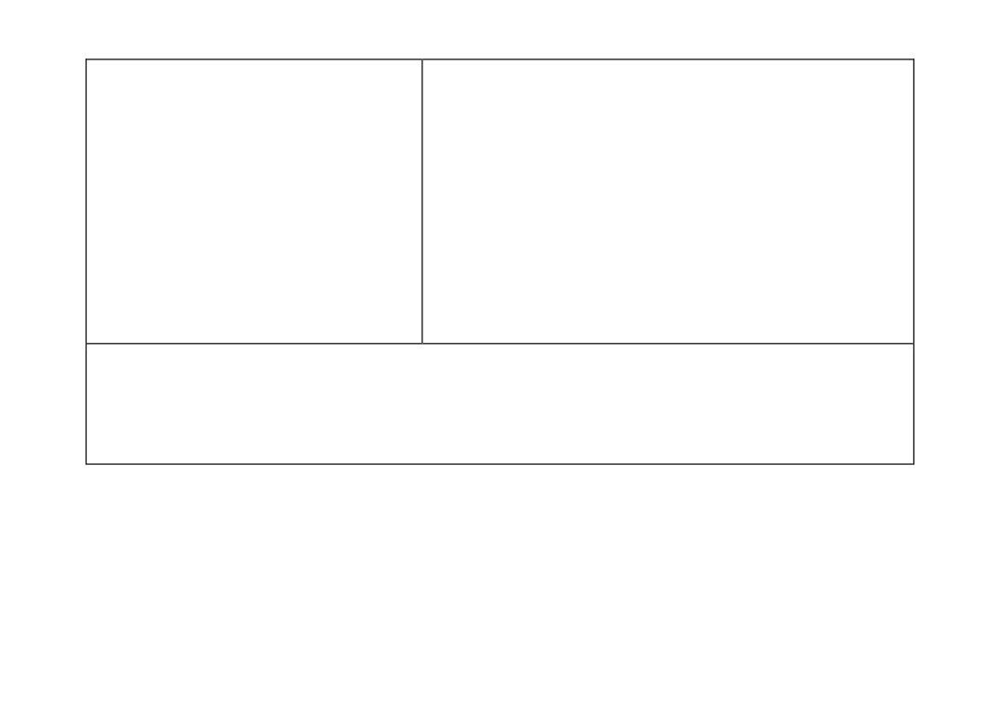
7. Pupils’ investment in learning is also driven by
Build trusting relationships, by:
their prior experiences and perceptions of
• Liaising with parents, carers and colleagues to better understand
success and failure.
pupils’ individual circumstances and how they can be supported to
meet high academic and behavioural expectations.
• Responding consistently to pupil behaviour.
Motivate pupils, by:
• Supporting pupils to master challenging content, which builds
towards long-term goals.
• Providing opportunities for pupils to articulate their long-term goals
and helping them to see how these are related to their success in
school.
• Helping pupils to journey from needing extrinsic motivation to being
motivated to work intrinsically.
Notes
Learn that… statements are informed by the best available educational research; references and further reading are provided
below.
Learn how to… statements are drawn from the wider evidence base including both academic research and additional guidance
from expert practitioners.
23
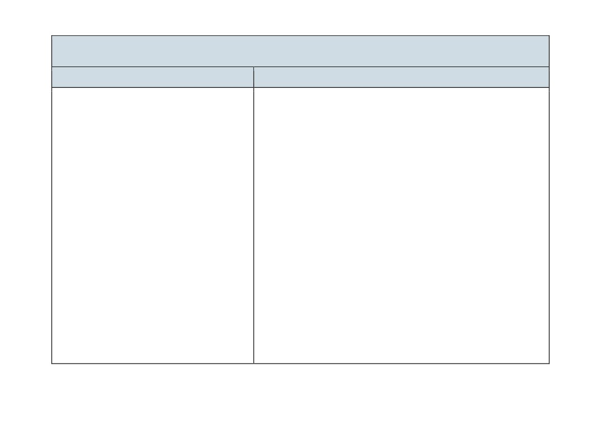
Professional Behaviours (Standard 8 - Fulfil wider professional responsibilities)
Learn that…
Learn how to…
1.
Effective professional development is likely to
Develop as a professional, by:
be sustained over time, involve expert support
• Engaging in professional development focused on developing an
or coaching and opportunities for collaboration.
area of practice with clear intentions for impact on pupil outcomes,
sustained over time with built-in opportunities for practice.
2.
Reflective practice, supported by feedback from
• Strengthening pedagogical and subject knowledge by participating in
and observation of experienced colleagues,
wider networks.
professional debate, and learning from
educational research, is also likely to support
• Seeking challenge, feedback and critique from mentors and other
improvement.
colleagues in an open and trusting working environment.
• Engaging critically with research and discussing evidence with
3.
Teachers can make valuable contributions to
colleagues.
the wider life of the school in a broad range of
ways, including by supporting and developing
• Reflecting on progress made, recognising strengths and weaknesses
effective professional relationships with
and identifying next steps for further improvement.
colleagues.
Build effective working relationships, by:
4.
Building effective relationships with parents,
• Contributing positively to the wider school culture and developing a
carers and families can improve pupils’
feeling of shared responsibility for improving the lives of all pupils
motivation, behaviour and academic success.
within the school.
5.
Teaching assistants (TAs) can support pupils
• Seeking ways to support individual colleagues and working as part of
more effectively when they are prepared for
a team.
lessons by teachers, and when TAs supplement
• Communicating with parents and carers proactively and making
rather than replace support from teachers.
effective use of parents’ evenings to engage parents and carers in
their children’s schooling.
6.
SENCOs, pastoral leaders, careers advisors
and other specialist colleagues also have
24
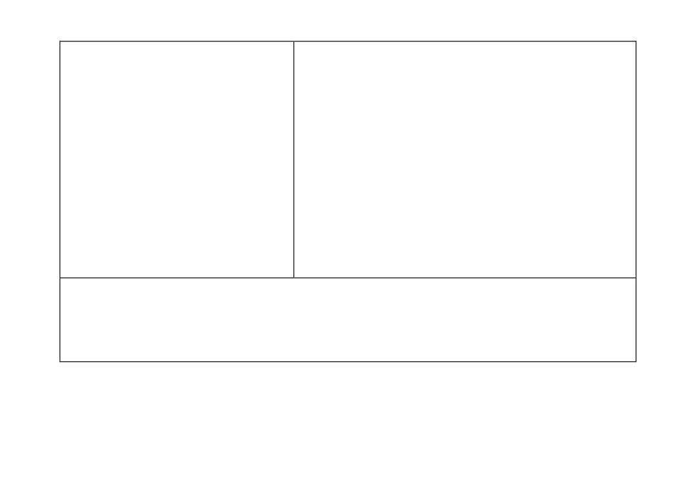
valuable expertise and can ensure that
• Working closely with the SENCO and other professionals supporting
appropriate support is in place for pupils.
pupils with additional needs, making explicit links between
interventions delivered outside of lessons with classroom teaching.
7. Engaging in high-quality professional
• Sharing the intended lesson outcomes with teaching assistants
development can help teachers improve.
ahead of lessons.
• Ensuring that support provided by teaching assistants in lessons is
additional to, rather than a replacement for, support from the teacher.
• Knowing who to contact with any safeguarding concerns.
Manage workload and wellbeing, by:
• Using and personalising systems and routines to support efficient
time and task management.
• Understanding the right to support (e.g. to deal with misbehaviour).
• Collaborating with colleagues to share the load of planning and
preparation and making use of shared resources (e.g. textbooks).
• Protecting time for rest and recovery.
Notes
Learn that… statements are informed by the best available educational research; references and further reading are provided
below.
Learn how to… statements are drawn from the wider evidence base including both academic research and additional guidance
from expert practitioners.
25
References
High Expectations (Standard 1- Set high expectations)
[Further reading recommendations are indicated with an asterisk.]
Aronson, J. (Ed.) (2002) Improving academic achievement: Impact of psychological factors on education. New York: Academic
Press.
Bandura, A. (1986) Social foundations of thought and action: a social cognitive theory. Englewood Cliffs, NJ: Prentice-Hall.
Campbell Collaboration (2018) School-based interventions for reducing disciplinary school exclusion: A Systematic Review.
Accessible from: https://campbellcollaboration.org/library/reducing-school-exclusion-school-based-interventions.html.
Chapman, R. L., Buckley, L., & Sheehan, M. (2013) School-Based Programs for Increasing Connectedness and Reducing Risk
Behavior: A Systematic Review, 25(1), 95-114.
Chetty, R., Friedman, J. N., Rockoff, J. E. (2014) Measuring the Impacts of Teachers II: Teacher Value-Added and Student
Outcomes in Adulthood. American Economic Review, 104(9), 2633-2679. https://doi.org/10.1257/aer.104.9.2633.
*Education Endowment Foundation (2018) Sutton Trust-Education Endowment Foundation Teaching and Learning Toolkit:
October 2018].
Hanushek, E. (1992) The Trade-off between Child Quantity and Quality. Journal of Political Economy, 100(4), 859-887.
*Institute of Education Sciences (2008) Reducing Behavior Problems in the Elementary School Classroom. Accessible from
https://ies.ed.gov/ncee/wwc/PracticeGuide/4.
Johnson, S., Buckingham, M., Morris, S., Suzuki, S., Weiner, M., Hershberg, R., B. Weiner, Hershberg, R., Fremont, E.,
Batanova, M., Aymong, C., Hunter, C., Bowers, E., Lerner, J., & Lerner, R. (2016) Adolescents’ Character Role Models:
Exploring Who Young People Look Up to as Examples of How to Be a Good Person. Research in Human Development, 13(2),
126-141. https://doi.org/10.1080/15427609.2016.1164552.
26
Jussim, L. & Harber, K., (2005) Teacher Expectations and Self-Fulfilling Prophecies: Knowns and Unknowns, Resolved and
Unresolved Controversies, Personality and Social Psychology Review 2005, Vol. 9, No. 2, 131-1557.
Lazowski, R. A., & Hulleman, C. S. (2016) Motivation Interventions in Education: A Meta-Analytic Review. Review of Educational
Research, 86(2), 602-640. https://doi.org/10.3102/0034654315617832.
Murdock-Perriera, L. A., & Sedlacek, Q. C. (2018) Questioning Pygmalion in the twenty-first century: the formation, transmission,
and attributional influence of teacher expectancies. Social Psychology of Education, 21(3), 691-707.
https://doi.org/10.1007/s11218-018-9439-9.
*PISA (2015) PISA in Focus: Do teacher-student relations affect students’ well-being at school? Accessible from:
https://doi.org/10.1787/22260919.
Rathmann K., Herke M., Hurrelmann K., Richter M. (2018) Perceived class climate and school-aged children's life satisfaction:
The role of the learning environment in classrooms. PLoS ONE 13(2): e0189335. https://doi.org/10.1371/journal.pone.0189335.
Rubie-Davies, C. M., Weinstein, R. S., Huang, F. L., Gregory, A., Cowan, P. A., & Cowan, C. P. (2014) Successive teacher
expectation effects across the early school years. Journal of Applied Developmental Psychology, 35(3), 181-191.
https://doi.org/10.1016/j.appdev.2014.03.006.
Slater, H., Davies, N. M., & Burgess, S. (2011) Do Teachers Matter? Measuring the Variation in Teacher Effectiveness in
England. Oxford Bulletin of Economics and Statistics, https://doi.org/10.1111/j.1468-0084.2011.00666.x.
Tsiplakides, I. & Keramida, A. (2010) The relationship between teacher expectations and student achievement in the teaching of
English as a foreign language. English Language Teaching, 3(2), P22. Retrieved from
http://files.eric.ed.gov/fulltext/EJ1081569.pdf.
Wubbels, T., Brekelmans, M., den Brok, P., Wijsman, L., Mainhard, T., & van Tartwijk, J. (2014) Teacher-student relationships
and classroom management. In E. T. Emmer, E. Sabornie, C. Evertson, & C. Weinstein (Eds.). Handbook of classroom
management: Research, practice, and contemporary issues (2nd ed., pp. 363-386). New York, NY: Routledge.
Zins, J. E., Bloodworth, M. R., Weissberg, R. P., & Walberg, H. J. (2007) The Scientific Base Linking Social and Emotional
Learning to School Success. Journal of Educational and Psychological Consultation, 17(2-3), 191-210.
27
How Pupils Learn (Standard 2 - Promote good progress)
[Further reading recommendations are indicated with an asterisk.]
Adesope, O. O., Trevisan, D. A., & Sundararajan, N. (2017) Rethinking the Use of Tests: A Meta-Analysis of Practice Testing.
Review of Educational Research, 87(3), 659-701. https://doi.org/10.3102/0034654316689306.
Agarwal, P. K., Finley, J. R., Rose, N. S., & Roediger, H. L. (2017) Benefits from retrieval practice are greater for students with
lower working memory capacity. Memory, 25(6), 764-771. https://doi.org/10.1080/09658211.2016.1220579.
Allen, B. and Sims, S. (2018) The Teacher Gap. Abingdon: Routledge.
Baddeley, A. (2003) Working memory: looking back and looking forward. Nature reviews neuroscience, 4(10), 829-839.
Black, P., & Wiliam, D. (2009) Developing the theory of formative assessment. Educational Assessment, Evaluation and
Accountability, 21(1), pp.5-31.
Chi, M. T. (2009) Three types of conceptual change: Belief revision, mental model transformation, and categorical shift. In
International handbook of research on conceptual change (pp. 89-110). Routledge.
Clark, R., Nguyen, F. & Sweller, J. (2006) Efficiency in Learning: Evidence-Based Guidelines to Manage Cognitive Load. John
Wiley & Sons.
Cowan, N. (2008) What are the differences between long-term, short-term, and working memory? Progress in brain research,
169, 323-338.
learning/. [retrieved 10 October 2018].
Dunlosky, J., Rawson, K. A., Marsh, E. J., Nathan, M. J., & Willingham, D. T. (2013) Improving students’ learning with effective
learning techniques: Promising directions from cognitive and educational psychology. Psychological Science in the Public
Interest, Supplement, 14(1), 4-58. https://doi.org/10.1177/1529100612453266.
*Education Endowment Foundation (2018) Improving Secondary Science Guidance Report. [Online] Accessible from:
28
Gathercole, S., Lamont, E., & Alloway, T. (2006) Working memory in the classroom. Working memory and education, 219-240.
Hattie, J. (2012) Visible Learning for Teachers. Oxford: Routledge.
Kirschner, P., Sweller, J., Kirschner, F. & Zambrano, J. (2018) From cognitive load theory to collaborative cognitive load theory.
In International Journal of Computer-Supported Collaborative Learning, 13(2), 213-233.
Pachler, H., Bain, P. M., Bottge, B. A., Graesser, A., Koedinger, K., McDaniel, M., & Metcalfe, J. (2007) Organizing Instruction
and Study to Improve Student Learning. US Department of Education.
Pan, S. C., & Rickard, T. C. (2018) Transfer of test-enhanced learning: Meta-analytic review and synthesis. Psychological
Bulletin, 144(7), 710-756. https://doi.org/10.1037/bul0000151.
Roediger, H. L., & Butler, A. C. (2011) The critical role of retrieval practice in long-term retention. Trends in Cognitive Sciences,
15(1), 20-27. https://doi.org/10.1016/j.tics.2010.09.003.
*Rosenshine, B. (2012) Principles of Instruction: Research-based strategies that all teachers should know. American Educator,
12-20. https://doi.org/10.1111/j.1467-8535.2005.00507.x.
Simonsmeier, B. A., Flaig, M., Deiglmayr, A., Schalk, L., & Well-being, S. (2018) Domain-Specific Prior Knowledge and Learning:
Sweller, J. (2016). Working Memory, Long-term Memory, and Instructional Design. Journal of Applied Research in Memory and
Cognition, 5(4), 360-367. http://doi.org/10.1016/j.jarmac.2015.12.002.
Willingham, D. T. (2009) Why don’t students like school? San Francisco, CA: JosseyBass.
Wittwer, J., & Renkl, A. (2010) How Effective are Instructional Explanations in Example-Based Learning? A Meta-Analytic
Review. Educational Psychology Review, 22(4), 393-409. https://doi.org/10.1007/s10648-010-9136-5.
29
Subject and Curriculum (Standard 3 - Demonstrate good subject and curriculum
knowledge)
[Further reading recommendations are indicated with an asterisk.]
Bailin, S., Case, R., Coombs, J. R., & Daniels, L. B. (1999) Common misconceptions of critical thinking. Journal of Curriculum
Studies, 31(3), 269-283.
Ball, D. L., Thames, M. H., & Phelps, G. (2008) Content knowledge for teachers: What makes it special? Journal of Teacher
Education, 2008 59: 389 DOI: 10.1177/0022487108324554 [Online] Accessible from:
https://www.math.ksu.edu/~bennett/onlinehw/qcenter/ballmkt.pdf.
Biesta, G. (2009) Good education in an age of measurement: on the need to reconnect with the question of purpose in education.
Educational Assessment, Evaluation and Accountability, 21(1).
*Coe, R., Aloisi, C., Higgins, S., & Major, L. E. (2014) What makes great teaching. Review of the underpinning research. Durham
Cowan, N. (2008) What are the differences between long-term, short-term, and working memory? Progress in brain research,
169, 323-338.
[retrieved 10 October 2018].
Education Endowment Foundation (2018) Improving Secondary Science Guidance Report. [Online] Accessible from:
Education Endowment Foundation (2018) Preparing for Literacy Guidance Report. [Online] Accessible from:
Education Endowment Foundation (2018) Sutton Trust-Education Endowment Foundation Teaching and Learning Toolkit:
October 2018].
30
Guzzetti, B. J. (2000) Learning counter-intuitive science concepts: What have we learned from over a decade of research?
Reading & Writing Quarterly: Overcoming Learning Difficulties, 16, 89 -98. http://dx.doi.org/10.1080/105735600277971.
Jerrim, J., & Vignoles, A. (2016) The link between East Asian "mastery" teaching methods and English children's mathematics
skills. Economics of Education Review, 50, 29-44. https://doi.org/10.1016/j.econedurev.2015.11.003.
Machin, S., McNally, S., & Viarengo, M. (2018) Changing how literacy is taught: Evidence on synthetic phonics. American
Economic Journal: Economic Policy, 10(2), 217-241. https://doi.org/10.1257/pol.20160514.
Rich, P. R., Van Loon, M. H., Dunlosky, J., & Zaragoza, M. S. (2017) Belief in corrective feedback for common misconceptions:
Implications for knowledge revision. Journal of Experimental Psychology: Learning, Memory, and Cognition, 43(3), 492-501.
http://dx.doi.org/10.1037/xlm0000322.
*Rosenshine, B. (2012) Principles of Instruction: Research-based strategies that all teachers should know. American Educator,
Scott, C. E., McTigue, E. M., Miller, D. M., & Washburn, E. K. (2018) The what, when, and how of preservice teachers and
literacy across the disciplines : A systematic literature review of nearly 50 years of research. Teaching and Teacher Education,
73, 1-13. https://doi.org/10.1016/j.tate.2018.03.010.
*Shanahan, T. (2005) The National Reading Panel Report: Practical Advice for Teachers. Accessible from:
https://files.eric.ed.gov/fulltext/ED489535.pdf.
Sweller, J., van Merrienboer, J. J. G., & Paas, F. G. W. C. (1998) Cognitive Architecture and Instructional Design. Educational
Psychology Review, 10(3), 251-296.https://doi.org/10.1023/A:1022193728205.
Willingham, D. T. (2002) Ask the Cognitive Scientist. Inflexible Knowledge: The First Step to Expertise. American Educator,
26(4), 31-33. Accessible from: https://www.aft.org/periodical/american-educator/winter-2002/ask-cognitive-scientist.
31
Classroom Practice (Standard 4 - Plan and teach well structured lessons)
[Further reading recommendations are indicated with an asterisk.]
Alexander, R. (2017) Towards Dialogic Teaching: rethinking classroom talk. York: Dialogos.
*Coe, R., Aloisi, C., Higgins, S., & Major, L. E. (2014) What makes great teaching. Review of the underpinning research. Durham
Donker, A. S., de Boer, H., Kostons, D., Dignath van Ewijk, C. C., & van der Werf, M. P. C. (2014) Effectiveness of learning
strategy instruction on academic performance: A meta-analysis. Educational Research Review, 11, 1-26.
https://doi.org/10.1016/j.edurev.2013.11.002.
Donovan, M. S., & Bransford, J. D. (2005) How students learn: Mathematics in the classroom. Washington, DC: The National
Academies Press.
Dunlosky, J., Rawson, K. A., Marsh, E. J., Nathan, M. J., & Willingham, D. T. (2013) Improving students’ learning with effective
learning techniques: Promising directions from cognitive and educational psychology. Psychological Science in the Public
Interest, Supplement, 14(1), 4-58. https://doi.org/10.1177/1529100612453266.
Education Endowment Foundation (2016) Improving Literacy in Key Stage One Guidance Report. [Online] Accessible from:
Education Endowment Foundation (2017) Improving Mathematics in Key Stages Two and Three Guidance Report. [Online]
Education Endowment Foundation (2017) Metacognition and Self-regulated learning Guidance Report. [Online] Accessible from:
Education Endowment Foundation (2018) Improving Secondary Science Guidance Report. [Online] Accessible from:
*Education Endowment Foundation (2018) Sutton Trust-Education Endowment Foundation Teaching and Learning Toolkit:
October 2018].
32
Elleman, A. M., Lindo, E. J., Morphy, P., & Compton, D. L. (2009) The Impact of Vocabulary Instruction on Passage-Level
Comprehension of School-Age Children: A Meta-Analysis. Journal of Research on Educational Effectiveness, 2(1), 1-44.
https://doi.org/10.1080/19345740802539200.
Hodgen, J., Foster, C., Marks, R. & Brown, M. (2018) Improving Mathematics in Key Stages Two and Three: Evidence Review.
Institute of Education Sciences. (2009) Assisting Students Struggling with Mathematics: Response to Intervention for Elementary
and Middle Schools. Accessible from: https://ies.ed.gov/ncee/wwc/Docs/PracticeGuide/rti_math_pg_042109.pdf.
Jay, T., Willis, B., Thomas, P., Taylor, R., Moore, N., Burnett, C., Merchant, G., Stevens, A. (2017) Dialogic Teaching: Evaluation
Kalyuga, S. (2007) Expertise reversal effect and its implications for learner-tailored instruction. Educational Psychology Review,
19(4), 509-539.
Kirschner, P., Sweller, J., Kirschner, F. & Zambrano, J. (2018) From cognitive load theory to collaborative cognitive load theory.
In International Journal of Computer-Supported Collaborative Learning, 13(2), 213-233.
Leung, K. C. (2015) Preliminary Empirical Model of Crucial Determinants of Best Practice for Peer Tutoring on Academic
Achievement Preliminary Empirical Model of Crucial Determinants of Best Practice for Peer Tutoring on Academic Achievement.
Journal of Educational Psychology, 107(2), 558-579. https://doi.org/10.1037/a0037698.
Muijs, D., & Reynolds, D. (2017) Effective teaching: Evidence and practice. Thousand Oaks, CA: Sage.
Pan, S. C., & Rickard, T. C. (2018) Transfer of test-enhanced learning: Meta-analytic review and synthesis. Psychological
Bulletin, 144(7), 710-756. http://psycnet.apa.org/doiLanding?doi=10.1037%2Fbul0000151.
*Rosenshine, B. (2012) Principles of Instruction: Research-based strategies that all teachers should know. American Educator,
Sweller, J. (2016). Working Memory, Long-term Memory, and Instructional Design. Journal of Applied Research in Memory and
Cognition, 5(4), 360-367. http://doi.org/10.1016/j.jarmac.2015.12.002.
33
Tereshchenko, A., Francis, B., Archer, L., Hodgen, J., Mazenod, A., Taylor, B., Travers, M. C. (2018) Learners’ attitudes to
mixed-attainment grouping: examining the views of students of high, middle and low attainment. Research Papers in Education,
1522, 1-20. https://doi.org/10.1080/02671522.2018.1452962.
Van de Pol, J., Volman, M., Oort, F., & Beishuizen, J. (2015) The effects of scaffolding in the classroom: support contingency and
student independent working time in relation to student achievement, task effort and appreciation of support. Instructional
Science, 43(5), 615-641.
Wittwer, J., & Renkl, A. (2010) How Effective are Instructional Explanations in Example-Based Learning? A Meta-Analytic
Review. Educational Psychology Review, 22(4), 393-409. https://doi.org/10.1007/s10648-010-9136-5.
Zimmerman, B. J. (2002) Becoming a Self-Regulated Learner: An Overview, Theory Into Practice. Theory Into Practice, 41(2),
64-70. https://www.jstor.org/stable/1477457?seq=1#page_scan_tab_contents.
34
Adaptive Teaching (Standard 5 - Adapt teaching)
[Further reading recommendations are indicated with an asterisk.]
*Davis, P., Florian, L., Ainscow, M., Dyson, A., Farrell, P., Hick, P., Rouse, M. (2004) Teaching Strategies and Approaches for
Pupils with Special Educational Needs: A Scoping Study. Accessible from: http://dera.ioe.ac.uk/6059/1/RR516.pdf.
Deunk, M. I., Smale-Jacobse, A. E., de Boer, H., Doolaard, S., & Bosker, R. J. (2018) Effective differentiation Practices: A
systematic review and meta-analysis of studies on the cognitive effects of differentiation practices in primary education.
Educational Research Review, 24(February), 31-54. https://doi.org/10.1016/j.edurev.2018.02.002.
*Education Endowment Foundation (2018) Sutton Trust-Education Endowment Foundation Teaching and Learning Toolkit:
October 2018].
Hattie, J. (2009) Visible learning: a synthesis of over 800 meta-analyses relating to achievement. London: Routledge.
Kriegbaum, K., Becker, N., & Spinath, B. (2018) The Relative Importance of Intelligence and Motivation as Predictors of School
Achievement: A meta-analysis. Educational Research Review. https://doi.org/10.1016/j.edurev.2018.10.001.
*OECD (2015) Pisa 2015 Result: Policies and Practices for Successful Schools. Accessible from:
Pashler, H., McDaniel, M., Rohrer, D., & Bjork, R. (2008) Learning Styles: Concepts and Evidence. Psychological Science in the
Public Interest, 9 (3).
Sisk, V. F., Burgoyne, A. P., Sun, J., Butler, J. L., & Macnamara, B. N. (2018) To What Extent and Under Which Circumstances
Are Growth Mind-Sets Important to Academic Achievement? Two Meta-Analyses. Psychological Science, 29(4), 549-571.
Speckesser, S., Runge, J., Foliano, F., Bursnall, M., Hudson-Sharp, N., Rolfe, H. & Anders, J. (2018) Embedding Formative
Assessment: Evaluation Report. [Online] Accessible from:
35
Steenbergen-Hu, S., Makel, M. C., & Olszewski-Kubilius, P. (2016) What One Hundred Years of Research Says About the
Effects of Ability Grouping and Acceleration on K-12 Students Academic Achievement: Findings of Two Second-Order Meta-
Analyses. Review of Educational Research (Vol. 86). https://doi.org/10.3102/0034654316675417.
Tereshchenko, A., Francis, B., Archer, L., Hodgen, J., Mazenod, A., Taylor, B., Travers, M. C. (2018) Learners’ attitudes to
mixed-attainment grouping: examining the views of students of high, middle and low attainment. Research Papers in Education,
1522, 1-20. https://doi.org/10.1080/02671522.2018.1452962.
Willingham, D. T. (2010) The Myth of Learning Styles, Change, 42(5), 32-35.
36
Assessment (Standard 6 - Make accurate and productive use of assessment)
[Further reading recommendations are indicated with an asterisk.]
Black, P., & Wiliam, D. (2009) Developing the theory of formative assessment. Educational Assessment, Evaluation and
Accountability, 21(1), pp.5-31.
*Black, P., Harrison, C., Lee, C., Marshall, B., & Wiliam, D. (2004). Working inside the Black Box: Assessment for Learning in the
Christodoulou, D. (2017) Making Good Progress: The Future of Assessment for Learning. Oxford: OUP.
*Coe, R. (2013) Improving Education: A triumph of hope over experience. Centre for Evaluation and Monitoring. Accessible from:
http://www.cem.org/attachments/publications/ImprovingEducation2013.pdf.
*Education Endowment Foundation (2016) A marked improvement? A review of the evidence on written marking. Accessible
from: https://educationendowmentfoundation.org.uk/public/files/Publications/EEF_Marking_Review_April_2016.pdf.
Education Endowment Foundation (2018) Sutton Trust-Education Endowment Foundation Teaching and Learning Toolkit:
October 2018].
Gibson, S., Oliver, L. and Dennison, M. (2015) Workload Challenge: Analysis of teacher consultation responses. Department for
Education. Accessible from:
_Workload_Challenge_Analysis_of_teacher_consultation_responses_sixth_form_colleges.pdf.
Hattie, J., & Timperley, H. (2007) The Power of Feedback. Review of Educational Research, 77(1), 81-112.
Harlen, W. & James, M. (1997) Assessment and Learning: differences and relationships between formative and summative
assessment, Assessment in Education: Principles, Policy & Practice 4:3, 365-379.Kluger, A. N., & DeNisi, A. (1996) The effects
of feedback interventions on performance: A historical review, a meta-analysis, and a preliminary feedback intervention theory.
Psychological Bulletin, 119(2), 254-284. https://doi.org/10.1037/0033-2909.119.2.254.
37
Sadler, D. (1989) Formative assessment and the design of instructional systems. Instructional Science, 18(2), pp.119-144.
Speckesser, S., Runge, J., Foliano, F., Bursnall, M., Hudson-Sharp, N., Rolfe, H. & Anders, J. (2018) Embedding Formative
Assessment: Evaluation Report. [Online] Accessible from:
Wiliam, D. (2010) What Counts as Evidence of Educational Achievement? The Role of Constructs in the Pursuit of Equity in
Assessment. Review of Research in Education, 34, pp. 254-284.
Wiliam, D. (2017) Assessment, marking and feedback. In Hendrick, C. and McPherson, R. (Eds.) What Does This Look Like in
the Classroom? Bridging the gap between research and practice. Woodbridge: John Catt.
38
Managing Behaviour (Standard 7 - Manage behaviour effectively)
[Further reading recommendations are indicated with an asterisk.]
Bennett, J., Lubben, F., & Hogarth, S. (2006) Bringing Science to Life: A Synthesis of the Research Evidence on the Effects of
Context-Based and STS Approaches to Science Teaching. Science Education, 91(1), 36-74.
https://www.york.ac.uk/media/educationalstudies/documents/staff-docs/Bennett%20Lubben%20Hogarth%202007.pdf.
*Carroll, J., Bradley, L., Crawford, H., Hannant, P., Johnson, H., & Thompson, A. (2017). SEN support: A rapid evidence
assessment. Accessible from:
Chapman, R. L., Buckley, L., & Sheehan, M. (2013) School-Based Programs for Increasing Connectedness and Reducing Risk
Behavior: A Systematic Review, 25(1), 95-114.
*Coe, R., Aloisi, C., Higgins, S., & Major, L. E. (2014) What makes great teaching. Review of the underpinning research. Durham
University: UK. Available at: http://bit.ly/2OvmvKO.
DuPaul, G. J., Belk, G. D., & Puzino, K. (2016) Evidence-Based Interventions for Attention Deficit Hyperactivity Disorder in
Children and Adolescents. Handbook of Evidence-Based Interventions for Children and Adolescents, 167.
Education Endowment Foundation (2018) Improving Secondary Science Guidance Report. [Online] Accessible from:
Education Endowment Foundation (2018) Sutton Trust-Education Endowment Foundation Teaching and Learning Toolkit:
October 2018].
Gutman, L. & Schoon, L. (2013) The impact of non-cognitive skills on the outcomes of young people. [Online] Accessible from:
October 2018].
39
*Institute of Education Sciences (2008) Reducing Behavior Problems in the Elementary School Classroom. Accessible from
https://ies.ed.gov/ncee/wwc/PracticeGuide/4.
Kern, L., & Clemens, N. H. (2007) Antecedent strategies to promote appropriate classroom behavior. Psychology in the Schools,
44(1), 65-75. https://doi.org/10.1002/pits.20206.
Lazowski, R. A., & Hulleman, C. S. (2016) Motivation Interventions in Education: A Meta-Analytic Review. Review of Educational
Research, 86(2), 602-640. https://doi.org/10.3102/0034654315617832.
Mitchell, D. (2014). What really works in special and inclusive education. Oxford: Routledge.
Sibieta, L., Greaves, E. & Sianesi, B. (2014) Increasing Pupil Motivation: Evaluation Report. [Online] Accessible from:
2018].
Ursache, A., Blair, C., & Raver, C. C. (2012) The promotion of self-regulation as a means of enhancing school readiness and
early achievement in children at risk for school failure. Child Development Perspectives, 6(2), 122-128.
Willingham, D. T. (2009) Why don’t students like school? San Francisco, CA: JosseyBass.
Wubbels, T., Brekelmans, M., den Brok, P., Wijsman, L., Mainhard, T., & van Tartwijk, J. (2014) Teacher-student relationships
and classroom management. In E. T. Emmer, E. Sabornie, C. Evertson, & C. Weinstein (Eds.). Handbook of classroom
management: Research, practice, and contemporary issues (2nd ed., pp. 363-386). New York, NY: Routledge.
Yeager, D. S., & Walton, G. M. (2011) Social-Psychological Interventions in Education: They’re Not Magic. Review of Educational
Research, 81(2), 267-301. https://doi.org/10.3102/0034654311405999.
40
Professional Behaviours (Standard 8 - Fulfil wider professional responsibilities)
[Further reading recommendations are indicated with an asterisk.]
Allen JP, Pianta RC, Gregory A, Mikami AY, Lun J (2011) An interaction-based approach to enhancing secondary school instructio
and student achievement. Science 333(6045):1034-1037 https://doi.org/10.1126/science.1207998.
Basma, B. & Savage, R. (2018) Teacher Professional Development and Student Literacy Growth: a Systematic Review and Meta-
analysis. Education Psychology Review. 30: 457 https://doi.org/10.1007/s10648-017-9416-4.
Blatchford, P., Bassett, P., Brown, P., Martin, C., Russell, A., & Webster, R. (2009) Deployment and impact of support staff in
schools: Characteristics, Working Conditions and Job Satisfaction of Support Staff in Schools. Retrieved from
http://eprints.uwe.ac.uk/12342/.
*Carroll, J., Bradley, L., Crawford, H., Hannant, P., Johnson, H., & Thompson, A. (2017) SEN support: A rapid evidence
assessment. Accessible from:
https://assets.publishing.service.gov.uk/government/uploads/system/uploads/attachment_data/file/628630/DfE_SEN_Support_REA
*Cordingley, P., Higgins, S., Greany, T., Buckler, N., Coles-Jordan, D., Crisp, B., Saunders, L. & Coe, R. (2015) Developing Great
Teaching. Accessible from: https://tdtrust.org/about/dgt. [accessed 18 October 2018].
Darling-Hammond, L. (2009) Professional Learning in the Learning Profession.
Department for Education (2018) Schools: guide to the 0 to 25 SEND code of practice,
0_to_25_SEND_Code_of_Practice.pdf. [accessed 18 October 2018].
*Education Endowment Foundation (2015) Making Best Use of Teaching Assistants Guidance Report. [Online] Accessible from:
Education Endowment Foundation (2018) Sutton Trust-Education Endowment Foundation Teaching and Learning Toolkit:
October 2018].
41
Hughes, D., Mann, A., Barnes, S., Baladuf, B. and McKeown, R. (2016). Careers education: International literature review.
2018].
Kraft, M., Blazar, D., & Hogan, D. (2018) The Effect of Teacher Coaching on Instruction and Achievement: A Meta-Analysis of the
Causal Evidence. Review of Educational Research, 003465431875926. https://doi.org/10.3102/0034654318759268.
Skaalvik, E. M., & Skaalvik, S. (2017) Still motivated to teach? A study of school context variables, stress and job satisfaction
among teachers in senior high school. Social Psychology of Education, 20(1), 15-37. https://doi.org/10.1007/s11218-016-9363-9.
42
© Crown copyright 2019
This publication (not including logos) is licensed under the terms of the Open
Government Licence v3.0 except where otherwise stated. Where we have identified
any third party copyright information you will need to obtain permission from the
copyright holders concerned.
To view this licence:
visit
email
write to
Information Policy Team, The National Archives, Kew, London, TW9 4DU
About this publication:
Reference: DFE-00015-2019
Follow us on Twitter:
Like us on Facebook:
43